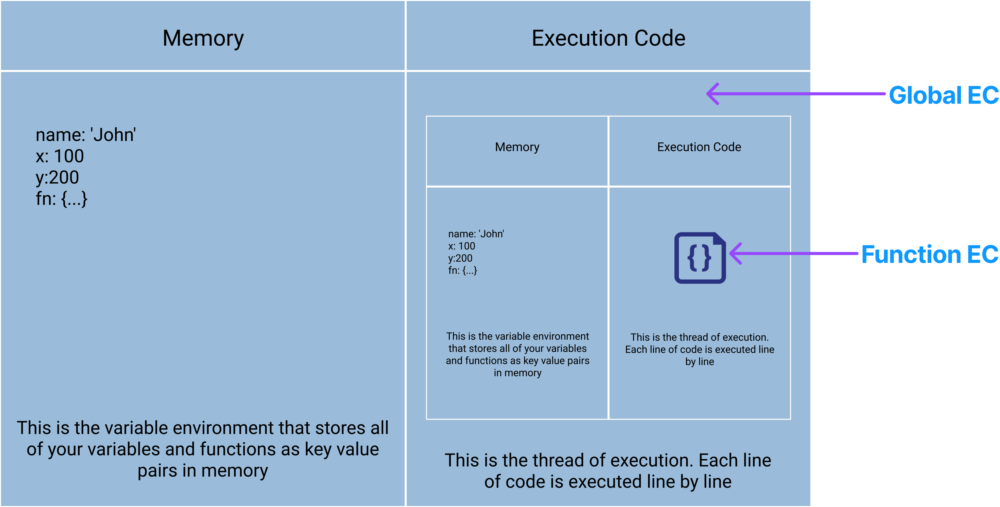

When you run any JavaScript, a special environment is created to handle
the transformation & execution of code. This is called the execution
context. It contains the currently running code and everything that aids
in its execution.
There is a global execution context as well as a function execution
context for every function invoked

Execution Context Phases
Memory Creation Phase:
- Create the global object (browser window, Node.js = global)
- Create the 'this' object and bind it to the global object
- Setup memory heap for storing variables and function references
-
Store functions and variables in global execution context and set to
"undefined
Execution Phase:
- Execute code line by line
- Memory Creation Phase:
1 let x 100
2 let y = 58
3 function getSum (n1, 12) {
4 let sum = n1 + n2
5 return sum
6 }
7 let sum1 = getsum(x, y)
8 let sum2 = getsum(10, 5)
Creation Phase:
Line 1: x variable is allocated memory and stores "undefined"
Line 2: y variable is allocated memory and stores "undefined"
Line 3: getSum() function is allocated memory and stores all the
code
Line 7: sum1 variable is allocated memory and stores "undefined"
Line 8: sum2 variable is allocated memory and stores "undefined"
Execution Phase:
Line 1: Places the value of 100 into the x variable
Line 2: Places the value of 50 into the y variable
Line 3: Skips the function because there is nothing to execute
Line 7: Invokes the getSum() function and creates a new function
execution context
1 let x 100
2 let y = 58
3 function getSum (n1, 12) {
4 let sum = n1 + n2
5 return sum
6 }
7 let sum1 = getsum(x, y)
8 let sum2 = getsum(10, 5)

Function EC Creation Phase:
Line 3:n1 & n2 variables are allocated memory and stores
"undefined"
Line 4: sum variable is allocated memory and stores "undefined"
Function EC Execution Phase:
Line 3: n1 & n2 are assigned 100 and 50
Line 4: Calculation is done and 150 is put into the sum variable
Line 5:return tells the function EC to return to the global EC
with value of sum (150)
Line 7: Returned sum value is put into the sum1 variable
Line 8: Open another function execution context and do the same
thing with different parameters